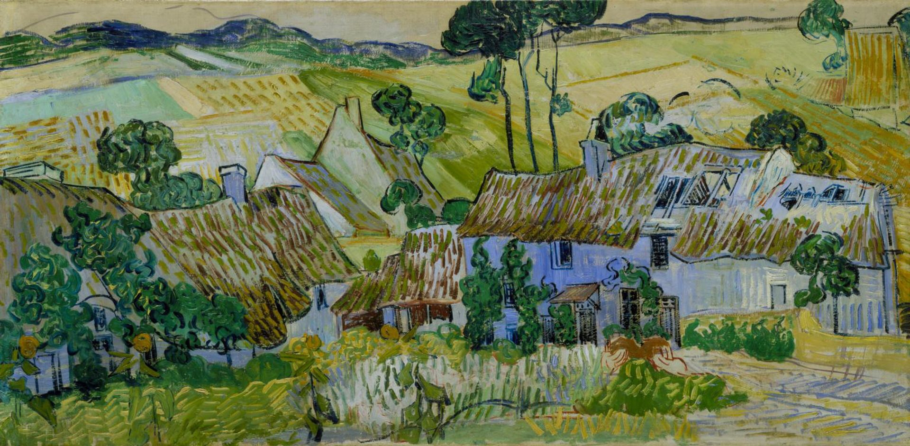

奥维尔附近的农场 Farms near Auvers
梵高 · 1890年7月 · 泰特美术馆，借展于伦敦国家美术馆
Vincent van Gogh · July 1890 · Tate, on loan to the National Gallery, London
图片：Wikimedia Commons，公有领域 / Image: Wikimedia Commons, public domain

发现 · Discover
茅草屋顶 Thatched roofs
梵高刚到奥维尔，就写信给妹妹：“这里有长着青苔的茅草屋顶，非常棒，我一定会画点什么。”
Soon after arriving in Auvers, Van Gogh wrote to his sister: “Here there are roofs of mossy thatch which are superb, and of which I'll certainly do something.”
一排破旧的农舍 A row of old farmhouses
画面上最显眼的，是一排破旧的农舍。
A row of dilapidated farm buildings dominates the picture.
科尔德维尔 Cordeville
这些农舍在奥维尔边上一个叫科尔德维尔的小村子里。
These cottages stood in Cordeville, a tiny hamlet on the edge of Auvers.
起伏的田野 Rolling fields
农舍周围是一片起伏的绿色田野。
All around the cottages, green fields roll away.
空白的天空 An empty sky
天空几乎是空白的，笔触也很快，这幅画可能没有画完。
The sky is almost blank and the brushwork hasty: the painting may be unfinished.
很宽的画布 A wide canvas
画布的宽度正好是高度的两倍，适合画开阔的风景。
The canvas is exactly twice as wide as it is tall, suited to a broad landscape.
故事 · The story
ACT I 第一幕 · 来到奥维尔 Arriving in Auvers
1890年5月，梵高离开圣雷米的疗养院，搬到巴黎附近的小镇奥维尔。他很快就爱上了这里长着青苔的茅草屋顶。
In May 1890, Van Gogh left the asylum at Saint-Rémy and moved to Auvers-sur-Oise, a small town near Paris. He soon fell in love with its mossy thatched roofs.
1890年7月 · 泰特美术馆，借展于伦敦国家美术馆 / July 1890 · Tate, on loan to the National Gallery, London
ACT II 第二幕 · 科尔德维尔的农舍 The farmhouses of Cordeville
7月，他在奥维尔边上的小村子科尔德维尔，画下了这一排破旧的农舍和起伏的田野。这是他最后的风景画之一。
In July, in the hamlet of Cordeville on the edge of Auvers, he painted this row of old farmhouses and rolling fields. It is one of his last landscapes.
1890年7月 · 泰特美术馆，借展于伦敦国家美术馆 / July 1890 · Tate, on loan to the National Gallery, London
ACT III 第三幕 · 在伦敦 In London
1933年，收藏家弗兰克·斯托普把这幅画遗赠给了泰特美术馆。今天，它长期借给伦敦国家美术馆，挂在43号展厅，和梵高的其他作品在一起。
In 1933, the collector Frank Stoop bequeathed this painting to Tate. Today it is on long-term loan to the National Gallery, hanging in Room 43 with Van Gogh's other works.
1890年7月 · 泰特美术馆，借展于伦敦国家美术馆 / July 1890 · Tate, on loan to the National Gallery, London
长着青苔的茅草屋顶，非常棒。 Roofs of mossy thatch which are superb.
作品档案 · Artwork record
| 画家（生卒年） · Artist (dates) | 文森特·梵高（1853–1890） / Vincent van Gogh (1853–1890) |
|---|---|
| 画名 · Title | 奥维尔附近的农场 / Farms near Auvers |
| 年份 · Date | 1890年7月 / July 1890 |
| 材质 · Medium | 布面油画 / Oil on canvas |
| 尺寸 · Dimensions | 50.2 × 100.3 cm |
| 收藏地 · Collection | 泰特美术馆（1933年C. 弗兰克·斯托普遗赠），借展于伦敦国家美术馆，43号展厅（国家美术馆编号 L711） / Tate (Bequeathed by C. Frank Stoop, 1933), on loan to the National Gallery, London, Room 43 (L711) |
关于画家 · About the artist
文森特·梵高（1853–1890），荷兰画家。他将近27岁才开始画画，短短十年留下了大量作品。1888年他来到法国南部的阿尔勒，在那里画出了许多最著名的画。
Vincent van Gogh (1853–1890) was a Dutch painter. He began painting at around 27 and left a huge body of work in just ten years. In 1888 he moved to Arles in the south of France, where he painted many of his best-known works.
更多梵高的画 · More by Vincent van Gogh